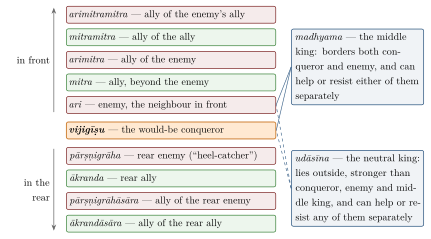

Chapter 7: The Circle of Kings: Diplomacy, Intelligence and War¶
Books 6 to 14 of the Arthaśāstra — more than half of the work — concern the relations of a king with other kings. They present a theory of the inter-state system, the “circle” (maṇḍala) of kings; a set of six policy options (ṣāḍguṇya) to be chosen according to circumstances; a doctrine of the means (upāya) by which an opponent may be won over or overcome; detailed advice on envoys, spies and covert action; and an account of military expeditions, battle and the capture of forts. The Mahābhārata and the Dharmaśāstras discuss the same subjects from their own perspectives, and their rules of righteous war (dharmayuddha) have attracted particular attention from modern students of the laws of war.
This chapter presents these doctrines, with attention to what the texts actually say. It also notes the tension, present within the tradition itself, between the Arthaśāstra’s frank acceptance of deception and violence and the epic and dharmaśāstric ideal of honourable war. Military history and the technology of war are treated in Volume 20 of this series.
7.1 The Circle of Kings¶
7.1.1 The Conqueror and His Neighbours¶
The Arthaśāstra’s theory of foreign policy is built around a figure called the vijigīṣu, “one who wishes to conquer”. He is not an emperor but the ruler of a kingdom of middling size, endowed with good personal qualities and good constituent elements, who seeks to increase his power (AŚ 6.2). Around him are other kings, whose attitude to him is determined principally by geography. The king whose territory borders his is his natural enemy (ari); the king beyond the enemy, who borders the enemy, is his natural ally (mitra); beyond him lies the enemy’s ally (arimitra), then the ally’s ally (mitramitra), then the ally of the enemy’s ally (arimitramitra). Behind the conqueror, similarly, there is a “rear enemy” (pārṣṇigrāha, literally “heel-catcher”), a “rear ally” (ākranda) and the allies of each (pārṣṇigrāhāsāra, ākrandāsāra).
Two further kings complete the circle. The “middle” king (madhyama) has territory adjoining both the conqueror and his enemy and is strong enough to help or resist either of them separately but not together. The “neutral” king (udāsīna) lies outside, is stronger than the conqueror, the enemy and the middle king, and is able to help or resist all of them separately. Together these make twelve kings. Each has five material elements of his own (minister, country, fort, treasury, army), so that the full circle has twelve royal and sixty material elements, seventy-two in all (AŚ 6.2). Figure 7.1 sets out the twelve positions.

7.1.2 What Kind of Theory Is This?¶
The maṇḍala is an abstract model. Its alternating pattern — “my neighbour’s neighbour is my friend” — follows from the assumption that kings who share a frontier compete for land and resources, so that the enemy of an enemy has an interest in cooperating against him. The text immediately qualifies it: a neighbour may be a “natural” enemy, but there are also enemies by birth (such as kinsmen with claims to the throne) and enemies made by injury, and an ally may become dangerous if he grows too strong. The model is a tool for thinking about a world of many kingdoms of comparable strength, in which none can afford to ignore the others. That is the world of the early historic Gangetic plain and Deccan, or of the regional kingdoms of the early medieval period, rather than of the Mauryan empire.
Modern scholars of international relations have often compared the maṇḍala with the balance-of-power thinking of European statecraft and with the “realist” theory of international politics, in which the structure of the system rather than the character of states determines their conduct. The comparison describes the text’s logic well, and Kauṭilya is now often read in courses on strategic thought (Boesche 2002). What it can obscure is the text’s purpose: the Arthaśāstra’s theory is addressed to a king who wishes to conquer, and it assumes, without argument, that expansion is the natural goal of kingship.
7.1.3 Three Kinds of Conqueror¶
The Arthaśāstra itself distinguishes kinds of conquest. In Book 12, discussing how a weaker king should respond to a stronger, it describes three types of conqueror: the “righteous conqueror” (dharmavijayin), who is satisfied with the submission of the defeated; the “greedy conqueror” (lobhavijayin), who wants land and wealth; and the “demonic conqueror” (asuravijayin), who wants land, wealth, the sons and wives of the defeated and their lives (AŚ 12.1). The weaker king should submit to the first, buy off the second, and resist the third by every means. The idea that a king might conquer and then restore the defeated ruler as a subordinate appears in inscriptions: Samudragupta’s Allahabad pillar inscription (4th century CE) boasts that he captured and then released and reinstated the kings of the south. Aśoka’s dhammavijaya, “conquest by dhamma”, proclaimed in his thirteenth Rock Edict after the bloody conquest of Kaliṅga, is a different and more radical idea (Chapter 8).
7.2 The Six Measures of Policy¶
7.2.1 Definitions¶
Book 7 begins: “The circle of constituent elements is the source of the six measures” (AŚ 7.1.1). The six measures (ṣāḍguṇya) are peace (sandhi), war (vigraha), staying quiet (āsana), marching (yāna), seeking shelter (saṃśraya) and the double policy (dvaidhībhāva). The text records that one teacher, Vātavyādhi, recognised only two measures, peace and war, from which the others derive; Kauṭilya insists that there are six, because the situations differ (AŚ 7.1.2–5). It then defines them tersely:
-
Peace (sandhi) is an agreement with stipulations (paṇabandha);
-
war (vigraha) is doing injury;
-
staying quiet (āsana) is remaining indifferent;
-
marching (yāna) is augmentation of one’s power, the military expedition;
-
seeking shelter (saṃśraya) is submitting oneself to another;
-
the double policy (dvaidhībhāva) is resorting to peace with one and war with another.
7.2.2 Choosing a Policy¶
The choice among them follows from an assessment of relative strength and of the direction in which one’s power is moving. The Arthaśāstra distinguishes three conditions of a kingdom: decline (kṣaya), stability (sthāna) and growth (vṛddhi); the aim of policy is to move from decline to stability and from stability to growth. Its basic rules are: a king who is declining in comparison with his enemy should make peace; one who is growing should make war; one who thinks that neither he nor his enemy can harm the other should stay quiet; one who has excess of strength should march; one who lacks strength should seek shelter with a stronger king; and one who needs help to achieve his aim should adopt the double policy (AŚ 7.1). If peace and war bring equal advantage, peace is to be preferred, because war brings losses, expenditure, absence from home and other evils (AŚ 7.2).
The remainder of Book 7 works through a long series of cases — whether to march against a weak enemy or a strong one, whether to ally with a weak king or a strong one, what to do when the rear enemy threatens — with a precision that has impressed modern readers. Its method is casuistic: it enumerates possibilities, compares advantages and disadvantages, and reports earlier opinions before giving its own.
7.2.3 Treaties and Hostages¶
Peace is concluded by agreements that may be sealed by oath, by surety or by hostages. The Arthaśāstra prefers agreements backed by hostages or sureties to those resting only on oaths, which it regards as unreliable (AŚ 7.17). It classifies peace treaties by what the weaker party surrenders: troops, treasure or territory, in various forms and on harder or easier terms (AŚ 7.3). It also explains how a king who has made peace may break it when he becomes stronger, and how he can use a treaty to lull an enemy into security. Treaties, in this text, are instruments of policy, binding for as long as they serve the interest of the party bound by them.
7.2.4 The Weaker King¶
Book 12, on the weaker king (ābalīyasa), considers the situation from the other side. Beyond the advice on the three kinds of conqueror given above, it describes the means by which a weak king can defeat a strong one without open battle: sending envoys to divide the enemy’s allies from him, using agents to turn his ministers and commanders against him, poisoning or assassinating him and his chief officers, and inciting his subjects and neighbours against him. Its realism about the resources available to the weak is one reason why the Arthaśāstra has interested modern students of asymmetric conflict.
7.2.5 Expeditions: Power, Place and Time¶
Before marching, the king must weigh his own and his enemy’s strength in terms of the “three powers” — counsel, might and energy (Chapter 4) — and consider the place and the time (AŚ 9.1). Places are to be judged by their suitability for one’s own army: some terrain suits elephants, some horses, some chariots, some infantry. Times are judged by the season — the text recommends particular months for campaigns against particular kinds of enemy, with attention to the harvest, the availability of fodder and water, and the rains — and by the opportunity presented by the enemy’s calamities. The king must also guard against revolts in the rear and against the danger that his own ministers or princes will rise while he is away. Book 9 thus combines the analysis of the maṇḍala with the practicalities of logistics and internal security.
7.3 The Four Means¶
The Arthaśāstra and the Dharmaśāstras recognise four means (upāya) of dealing with an opponent: conciliation (sāman), gifts (dāna, upapradāna), sowing dissension (bheda) and force (daṇḍa) (AŚ 2.10). The scheme became proverbial in Indian languages as “sām–dām–daṇḍ–bhed”. It is applied not only to enemy kings but to rebellious officials, forest peoples and confederacies.
The Manusmṛti expresses a preference for the milder means: the king should try to conquer his enemies by conciliation, gifts and dissension, used together or separately, and never by battle; since victory in battle is uncertain, he should avoid war as far as possible (Manu 7.198–199). Elsewhere it observes that the learned praise conciliation and force above the others for the growth of the kingdom (Manu 7.109). The Arthaśāstra is more pragmatic and more elaborate. In its treatment of confederacies (Book 11), for example, it recommends that agents sow dissension among the leaders by spreading rumours, provoking quarrels over women, and staging insults, so that the confederacy can be broken up and absorbed. The four means are not a moral hierarchy in the Arthaśāstra but a toolkit.
7.4 Envoys¶
The Arthaśāstra distinguishes three kinds of envoy (dūta) according to the powers delegated to them: the plenipotentiary (nisṛṣṭārtha), who has full authority to negotiate; the envoy with a limited mission (parimitārtha); and the bearer of a message (śāsanahara) (AŚ 1.16). The envoy should travel with the permission of the frontier officers, observe the strength of the enemy’s forts and army on the way, deliver his message exactly as given even if threatened with weapons, and avoid drink and women. He should gather information through spies and through the enemy’s disaffected subjects, and stay or leave according to his king’s interest.
Envoys enjoyed a protected status. The Arthaśāstra gives the reason: kings speak through envoys, and envoys must speak as instructed even when weapons are raised against them; “of them, even those of the lowest birth are not to be killed, much less Brahmins” (AŚ 1.16.14–15). The Rāmāyaṇa dramatises the same principle: when Hanumān, Rāma’s envoy, is captured in Laṅkā, Rāvaṇa wishes to kill him, but his brother Vibhīṣaṇa reminds him that envoys may not be killed, and Hanumān’s tail is set on fire instead. The inviolability of envoys is a principle found in many ancient societies, the remote ancestor of modern diplomatic immunity rather than a peculiarly Indian rule.
The epics give the envoy a central place in their plots. In the Mahābhārata’s Udyoga Parvan, Yudhiṣṭhira first sends word through Sañjaya, the envoy of the Kaurava king Dhṛtarāṣṭra, that the Pāṇḍavas would be content with five villages (MBh 5.31) — the offer that popular retellings put into Kṛṣṇa’s mouth. Kṛṣṇa then goes in person as envoy of the Pāṇḍavas to the Kaurava court to seek a peaceful settlement that would restore their share of the kingdom; Duryodhana refuses, and plots to seize the envoy, a plan that the elders condemn as a violation of dharma and that Kṛṣṇa foils by a display of divine power. The failure of the embassy makes war inevitable. In the Rāmāyaṇa, Aṅgada goes as Rāma’s envoy to Rāvaṇa before the battle for Laṅkā. These episodes dramatise both the ideal of negotiation before war and the vulnerability of envoys in the court of an enemy.
The Arthaśāstra is also candid that envoys are spies: the envoy is to cultivate the enemy’s officials, learn the disposition of his forces, and sow dissension where he can. Diplomacy and intelligence are not separate activities in this text.
7.5 Spies and Covert Action¶
7.5.1 The Network of Agents¶
No feature of the Arthaśāstra is more famous than its system of secret agents (Chapter 3). Book 1 describes “stationary” agents — a fraudulent student (kāpaṭika), an apostate ascetic (udāsthita), a householder (gṛhapatika), a trader (vaidehaka) and a holy man with shaven head or matted hair (tāpasa) — and “roving” agents: the secret operative (sattrin), often an orphan raised by the state and trained in signs, palmistry and other arts; the bravo (tīkṣṇa), ready to fight even an elephant for money; the poisoner (rasada); and the wandering nun (parivrājikā, bhikṣukī), who has access to the houses of high officials (AŚ 1.11–12). Agents are also placed as cooks, bath attendants, servants, entertainers, prostitutes and doorkeepers. They report through a system of signs and codes, and their reports are confirmed only when three independent agents agree.
7.5.2 Purposes¶
The agents serve three purposes. They watch the king’s own ministers and officials, test their loyalty and report on their conduct. They watch the population, reporting on the contented and the discontented and winning over or eliminating the latter. And they operate in the territory of enemies and allies, gathering intelligence, spreading rumours, corrupting officials and, when ordered, killing. Books 11–14 describe their use against confederacies, against a besieged fort and against enemy kings: agents may poison food and water, set fires, assassinate leaders at festivals, and use magical and medical preparations described in Book 14.
The modern vocabulary of “intelligence cycle”, “counter-intelligence” and “disinformation” has been applied to these chapters, and the text does show a sophisticated understanding of the gathering, verification and use of information. But the Arthaśāstra’s spies are more than an intelligence service: they are an instrument of social control within the kingdom and of covert violence outside it. Upinder Singh has emphasised how central this violence is to the text’s conception of the state (Singh 2017).
7.6 The Maṇḍala after Kauṭilya¶
The theory of the circle of kings was taken up and modified by later writers. Kāmandaka’s Nītisāra restates it at length, discussing the various circles of kings and the measures of policy, and it reports alternative schemes in which the circle has different numbers of members. The Manusmṛti summarises the same scheme (7.155–158), and the Śānti Parvan and later works on polity repeat it. Medieval inscriptions sometimes describe kings as having “subdued the circle” of their neighbours, using the vocabulary of the theory to praise military success. The concept also travelled with Indian political ideas to Southeast Asia, and modern historians of that region have used the term maṇḍala to describe the loosely structured, overlapping polities of the first and second millennia, in which a powerful centre was surrounded by tributary states whose allegiance shifted with its strength (Wolters 1982; Tambiah 1976). That modern usage is an analytical borrowing, not evidence that Southeast Asian rulers read the Arthaśāstra.
7.7 Intelligence in Later Indian States¶
Later Indian states maintained systems of intelligence and reporting, though they cannot be shown to have followed the Arthaśāstra. The Mughal empire posted news-writers (wāqiʿa-nawīs) and secret reporters in the provinces, who sent regular reports to the court on the conduct of governors and officials, on events in the towns and on the movements of troops; the emperor and his ministers used these reports to check the power of provincial officers. The Maratha state and the regional kingdoms of the eighteenth century maintained similar networks, and the East India Company built up its own system of intelligence in the course of its wars of conquest. Such institutions show that the problems the Arthaśāstra addressed — the loyalty of officials and the gathering of information in large states — were recurrent ones, solved in each period with the resources available.
7.8 War¶
7.8.1 Three Kinds of War¶
The Arthaśāstra distinguishes open war (prakāśayuddha), fought at an appointed time and place; concealed war (kūṭayuddha), which uses surprise, ambush, feigned retreat and attacks at night or on troops in difficulty; and “silent war” (tūṣṇīṃyuddha), the use of secret agents to kill or subvert enemy leaders without open hostilities (AŚ 7.6). Open war is the most honourable; the others are the most effective. When the conqueror is superior in strength, he may fight openly; when he is not, he should use concealed or silent war.
7.8.2 The Army and Battle¶
The traditional army had four arms (caturaṅga): elephants, chariots, cavalry and infantry. The Arthaśāstra describes the duties of the commander and of the superintendents of elephants, horses, chariots and infantry, the training and pay of troops, the choice of terrain suitable for each arm, and the order of march (AŚ 2.30–33; Book 10). It describes battle arrays (vyūha), of which four are basic: the staff (daṇḍa), the snake (bhoga), the circle (maṇḍala) and the detached array (asaṃhata), each with variants (AŚ 10.6). The elaborate arrays with names such as cakravyūha, garuḍavyūha and padmavyūha belong chiefly to the Mahābhārata and later literature.
The famous numerical scheme of army units is also epic rather than Kauṭilyan. The Mahābhārata (1.2) defines a patti as one chariot, one elephant, three horsemen and five foot soldiers; three pattis make a senāmukha, three senāmukhas a gulma, three gulmas a gaṇa, three gaṇas a vāhinī, three vāhinīs a pṛtanā, three pṛtanās a camū, three camūs an anīkinī, and ten anīkinīs an akṣauhiṇī — that is, 21,870 chariots, 21,870 elephants, 65,610 horsemen and 109,350 foot soldiers. The Kauravas are said to have fielded eleven akṣauhiṇīs and the Pāṇḍavas seven. These figures are epic idealisations, not records of real armies.
7.8.3 Sieges and Pacification¶
Book 13 of the Arthaśāstra describes how to take a fort: by sowing dissension within it through agents posing as holy men who claim omniscience or divine powers, by luring the enemy out, by blockade and by assault. It advises the destruction of the enemy’s crops, stores and water before a siege, and the Manusmṛti similarly tells the king besieging an enemy to spoil his fodder, food, water and fuel and to break his tanks, ramparts and moats (Manu 7.195–196). Neither text, therefore, protects the “environment” in war, as is sometimes claimed.
The last chapter of Book 13 concerns the pacification of conquered territory, and it is one of the more humane passages of the text. The conqueror should replace the vices of the defeated king with his own virtues; honour the local deities, festivals and religious leaders; adopt the dress, language and customs of the people; release prisoners and help the distressed; and abolish practices that the people regard as unjust (AŚ 13.5). The motive is stability, but the advice shows a clear understanding that conquest must be followed by legitimacy.
7.9 Righteous War and Its Limits¶
7.9.1 The Rules in Manu and the Epic¶
The Dharmaśāstras and the Mahābhārata lay down rules of conduct for Kṣatriyas in battle. Manu’s rules are among the most often quoted (Manu 7.90–93). A warrior fighting in battle should not kill his enemies with concealed weapons, or with barbed, poisoned or fire-tipped arrows. He should not kill an enemy who is on the ground when he himself is in a chariot, nor a eunuch, nor one who joins his palms in supplication, nor one whose hair is loose, nor one who is seated, nor one who says “I am yours”; nor one who is asleep, without armour, naked or unarmed, nor a spectator who is not fighting, nor one engaged with another; nor one whose weapons are broken, who is in distress, badly wounded, terrified or fleeing. The Mahābhārata’s Bhīṣma Parvan opens with a similar list of conventions agreed by both sides before the great battle: combatants should fight their equals, chariot against chariot and horse against horse; those who withdraw, who are unarmed or who have surrendered, charioteers, drummers and those carrying weapons for others should not be attacked.
These rules belong to the core of the tradition. The protection of those hors de combat, of the surrendered and of non-combatants, and the prohibition of certain weapons, all have counterparts in the Geneva and Hague Conventions. The differences are as instructive. The Indian rules are a warrior’s code of honour among Kṣatriyas, enforced, if at all, by religious sanction and reputation, not by any inter-state law. They protect combatants of equal standing far more than they protect civilians, and they coexist in the same texts with the advice to destroy the enemy’s supplies and to use stratagem when necessary.
7.9.2 The Epic’s Moral Struggle¶
The Mahābhārata does not present righteous war as easily attained. The Pāṇḍavas, the side of dharma, win the war only by a series of stratagems that break the agreed rules, most of them advised by Kṛṣṇa: Bhīṣma is felled by Arjuna sheltering behind Śikhaṇḍin, whom Bhīṣma will not fight; Droṇa is made to lay down his arms by Yudhiṣṭhira’s half-truth that “Aśvatthāman” (an elephant of that name) has been killed; Karṇa is killed while trying to free his stuck chariot wheel; Duryodhana is struck below the navel in a mace-fight, against the rules. The defeated Kauravas protest each time, and the epic gives their protests weight. Kṛṣṇa’s justification — that against enemies who themselves had broken every rule, and who could not otherwise be defeated, such means were necessary — reproduces in narrative form the Arthaśāstra’s distinction between open and concealed war. The epic’s refusal to resolve this tension is one of its most profound features.
7.9.3 Kauṭilya and the Laws of War¶
The Arthaśāstra does not deny the value of open, honourable battle, but it treats it as one option among several, to be used when one is stronger. Its silent war of assassination and its concealed war of stratagem belong to the same calculus. This frankness is the reason why later literary authors, such as Bāṇa, condemned the text as ruthless (Chapter 3), and why it fascinates modern students of strategy.
7.10 Diplomacy in Practice¶
Historical sources show Indian rulers practising many of the arts the texts describe. After Seleucus, Alexander’s successor in the east, failed to recover the Indian provinces, he concluded a treaty with Candragupta Maurya (c. 303 BCE) by which he ceded territories in the north-west, received five hundred war elephants, and entered into an agreement on marriage; Megasthenes was sent as his envoy to the Mauryan court. Aśoka’s thirteenth Rock Edict names five Hellenistic kings to whom he had sent his “conquest by dhamma” (Chapter 8).
Marriage alliances were a standard instrument of policy. The Gupta king Candragupta II married his daughter Prabhāvatīguptā to the Vākāṭaka king of the Deccan, and after her husband’s death she ruled as regent, extending Gupta influence southward. The Allahabad inscription of Samudragupta lists rulers who paid him homage, offered daughters in marriage or sought his favour. Harṣa of Kanauj exchanged embassies with the Tang emperor of China in the seventh century. The Cōḷa kings conducted diplomacy and war across the Bay of Bengal. Later, the Mughals combined war, marriage alliances with Rajput houses, the grant of ranks (manṣab) and the confirmation of local rulers in their lands in a policy of incorporation (Chapter 18). These cases illustrate the range of instruments — treaties, marriages, gifts, hostages, the reinstatement of defeated rulers — that the śāstras classify, though no ruler can be shown to have followed the Arthaśāstra as a manual.
7.11 Buddhist and Jain Views of War¶
The Buddhist and Jain traditions, with their ethics of non-violence, viewed war with particular unease. In the Pali canon the Buddha declares that a warrior who dies in battle does not, as was popularly believed, go to a heaven of warriors, because his mind at death is set on killing; Aśoka’s thirteenth Rock Edict expresses remorse for the deaths in Kaliṅga and recommends conquest by dhamma (Chapter 8). Jain narratives send the Vāsudeva heroes who kill their enemies to hell. Yet Buddhist and Jain kings fought wars like other kings, and their traditions found ways to accommodate them. The Sri Lankan chronicle Mahāvaṃsa tells how King Duṭṭhagāmaṇī, after defeating the Tamil king Eḷāra in the second century BCE, was troubled by the thousands killed in his war, and how monks consoled him by saying that only one and a half of the slain were true human beings, the rest being unbelievers — a passage often cited in modern discussions of religion and violence in Sri Lanka. The episode shows how religious traditions of non-violence could themselves be bent to justify war (Tambiah 1976).
7.12 War in Tamil Tradition¶
The Tamil Caṅkam poems offer a view of war very different from that of the Sanskrit treatises. The “exterior” (puṟam) poems, concerned with public life, war and kingship, were classified by early Tamil grammarians into situations (tiṇai), many of them military: the cattle raid that opened hostilities (veṭci) and the recovery of the cattle (karantai); the invasion of enemy territory (vañci) and its defence (kāñci); the siege of a fort (uḻiñai) and its defence (nocci); battle (tumpai) and victory (vākai). The poems celebrate the courage of warriors, the generosity of kings to their bards, and the grief of mothers and widows, and they record the custom of erecting memorial stones (naṭukal) for heroes who died in battle, many of which survive with inscriptions. They do not set out rules of war in the manner of Manu or the Mahābhārata; their values are those of a heroic society in which honour, gift and lament were bound together. Volume 8 of this series discusses this poetry, and Volume 20 the history of war.
7.13 Spoils, Captives and the Conquered¶
The texts that regulate the conduct of battle also regulate its rewards. Manu lays down that chariots, horses, elephants, parasols, money, grain, animals, women, goods of every kind and base metals belong to whoever wins them, but that the warriors should give the king a choice portion, and the king should distribute among them whatever was not won individually (Manu 7.96–97). The inclusion of women among the spoils is a reminder that the warrior’s code did not protect the women of the defeated. Captivity in war was also one of the recognised origins of slavery: Manu’s list of seven kinds of slave begins with the man “captured under a standard” (dhvajāhṛta, Manu 8.415), and the Arthaśāstra discusses the ransom and release of Āryas taken captive (Chapter 13).
Manu also advises the conqueror on how to treat a conquered kingdom. Having learned the wishes of its people, he should install a member of the defeated king’s family on the throne, make a formal agreement with him, honour the conquered king and his chief men with gifts, and make the laws and customs of the conquered land authoritative (Manu 7.201–203). This is close to the Arthaśāstra’s advice on pacification and to its ideal of the “righteous conqueror” (see above). Kālidāsa’s Raghuvaṃśa gives the ideal its classic literary form: King Raghu, on his conquest of the four quarters, is a “righteous conqueror” who takes the glory of the defeated king of Mahendra but not his land (Raghuvaṃśa 4.43). Inscriptions such as Samudragupta’s at Allahabad, which distinguish between kings of the north who were “violently uprooted” and kings of the south who were captured and released, show that rulers could practise both kinds of conquest and boast of both.
Aśoka’s thirteenth Rock Edict offers a rare view from the side of the victims: its account of the deportations and deaths in Kaliṅga (Chapter 8) dwells on the suffering of Brahmins, ascetics and householders who had done no wrong (Hultzsch 1925; Thapar 1961). No other ancient Indian text speaks of the victims of war in this way.
7.14 Comparisons and Reception¶
The Arthaśāstra’s doctrines of war and diplomacy are often compared with Sun Tzu’s Art of War (c. 5th–3rd century BCE), which also recommends the use of spies — it distinguishes five kinds — and prefers victory without battle; with Thucydides’ account of the Peloponnesian War, whose Melian Dialogue is a classic statement of the logic of power; and with Machiavelli. Such comparisons show that early political thinkers in several civilisations reached similar conclusions about the role of power, deception and intelligence in the relations of states. They do not establish that one tradition was more “advanced” than another, and the Arthaśāstra’s distinctive contribution is better described in its own terms: a systematic and casuistic analysis of the options open to a king in a world of competing kingdoms (Boesche 2002).
In modern India, the maṇḍala and the four means have been invoked by commentators on foreign policy, and Kauṭilya’s name has been given to institutions and conferences on strategic affairs. These are uses of a classical text by modern actors (Chapter 20). Historians have also drawn attention to the gap between the Arthaśāstra’s model and the actual conduct of Indian states, whose wars, alliances and marriage diplomacy are known from inscriptions and chronicles; the Cōḷa king Rājendra I’s naval expedition against Śrīvijaya in Southeast Asia (c. 1025 CE), for example, belongs to a world of maritime power that the text barely imagines.
7.15 Summary¶
-
The maṇḍala of twelve kings, in which neighbours are natural enemies and the neighbours’ neighbours natural allies, is the frame for six measures of policy and four means, chosen by relative strength.
-
Envoys are inviolable but also spies, and a network of secret agents serves surveillance at home and covert violence abroad.
-
The Arthaśāstra treats open, concealed and silent war as options to be weighed; Manu and the epic lay down rules of righteous war, which the Mahābhārata shows broken by the side of dharma itself.
Further Reading¶
AŚ Books 6–14 are translated in Olivelle (2013) and Kangle (1960); McClish and Olivelle (2012) provides selections. Boesche (2002) discusses the Arthaśāstra as political realism; Singh (2017) examines war and violence in the texts and inscriptions. On the rules of war in the epic, see Fitzgerald (2004); for military history and technology, Volume 20 of this series.